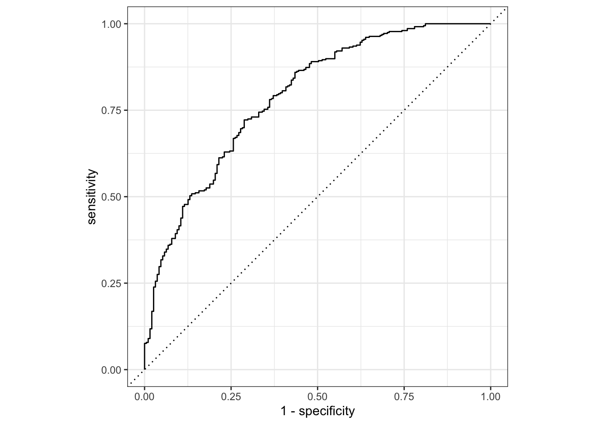
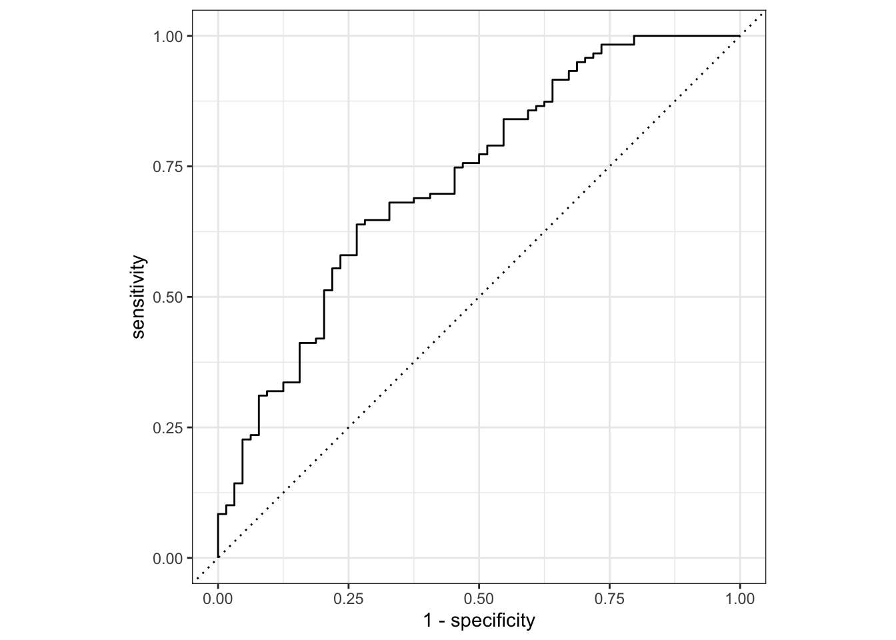
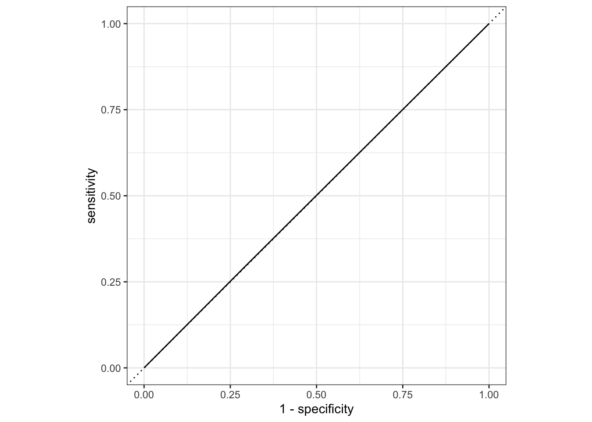
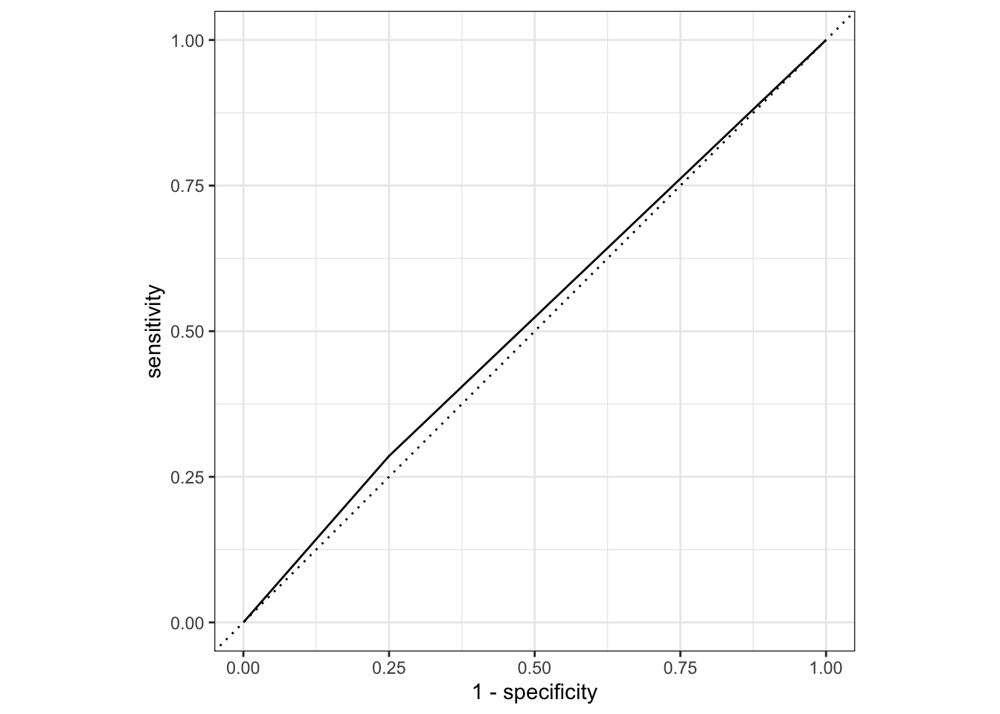

<!DOCTYPE html>
<html xmlns="http://www.w3.org/1999/xhtml" lang="en" xml:lang="en"><head>

<meta charset="utf-8">
<meta name="generator" content="quarto-1.2.313">

<meta name="viewport" content="width=device-width, initial-scale=1.0, user-scalable=yes">

<meta name="author" content="Irene Cavros">

<title>My Data Analysis Portfolio - Model Evaluation</title>
<style>
code{white-space: pre-wrap;}
span.smallcaps{font-variant: small-caps;}
div.columns{display: flex; gap: min(4vw, 1.5em);}
div.column{flex: auto; overflow-x: auto;}
div.hanging-indent{margin-left: 1.5em; text-indent: -1.5em;}
ul.task-list{list-style: none;}
ul.task-list li input[type="checkbox"] {
  width: 0.8em;
  margin: 0 0.8em 0.2em -1.6em;
  vertical-align: middle;
}
pre > code.sourceCode { white-space: pre; position: relative; }
pre > code.sourceCode > span { display: inline-block; line-height: 1.25; }
pre > code.sourceCode > span:empty { height: 1.2em; }
.sourceCode { overflow: visible; }
code.sourceCode > span { color: inherit; text-decoration: inherit; }
div.sourceCode { margin: 1em 0; }
pre.sourceCode { margin: 0; }
@media screen {
div.sourceCode { overflow: auto; }
}
@media print {
pre > code.sourceCode { white-space: pre-wrap; }
pre > code.sourceCode > span { text-indent: -5em; padding-left: 5em; }
}
pre.numberSource code
  { counter-reset: source-line 0; }
pre.numberSource code > span
  { position: relative; left: -4em; counter-increment: source-line; }
pre.numberSource code > span > a:first-child::before
  { content: counter(source-line);
    position: relative; left: -1em; text-align: right; vertical-align: baseline;
    border: none; display: inline-block;
    -webkit-touch-callout: none; -webkit-user-select: none;
    -khtml-user-select: none; -moz-user-select: none;
    -ms-user-select: none; user-select: none;
    padding: 0 4px; width: 4em;
    color: #aaaaaa;
  }
pre.numberSource { margin-left: 3em; border-left: 1px solid #aaaaaa;  padding-left: 4px; }
div.sourceCode
  {   }
@media screen {
pre > code.sourceCode > span > a:first-child::before { text-decoration: underline; }
}
code span.al { color: #ff0000; font-weight: bold; } /* Alert */
code span.an { color: #60a0b0; font-weight: bold; font-style: italic; } /* Annotation */
code span.at { color: #7d9029; } /* Attribute */
code span.bn { color: #40a070; } /* BaseN */
code span.bu { color: #008000; } /* BuiltIn */
code span.cf { color: #007020; font-weight: bold; } /* ControlFlow */
code span.ch { color: #4070a0; } /* Char */
code span.cn { color: #880000; } /* Constant */
code span.co { color: #60a0b0; font-style: italic; } /* Comment */
code span.cv { color: #60a0b0; font-weight: bold; font-style: italic; } /* CommentVar */
code span.do { color: #ba2121; font-style: italic; } /* Documentation */
code span.dt { color: #902000; } /* DataType */
code span.dv { color: #40a070; } /* DecVal */
code span.er { color: #ff0000; font-weight: bold; } /* Error */
code span.ex { } /* Extension */
code span.fl { color: #40a070; } /* Float */
code span.fu { color: #06287e; } /* Function */
code span.im { color: #008000; font-weight: bold; } /* Import */
code span.in { color: #60a0b0; font-weight: bold; font-style: italic; } /* Information */
code span.kw { color: #007020; font-weight: bold; } /* Keyword */
code span.op { color: #666666; } /* Operator */
code span.ot { color: #007020; } /* Other */
code span.pp { color: #bc7a00; } /* Preprocessor */
code span.sc { color: #4070a0; } /* SpecialChar */
code span.ss { color: #bb6688; } /* SpecialString */
code span.st { color: #4070a0; } /* String */
code span.va { color: #19177c; } /* Variable */
code span.vs { color: #4070a0; } /* VerbatimString */
code span.wa { color: #60a0b0; font-weight: bold; font-style: italic; } /* Warning */
</style>


<script src="../../site_libs/quarto-nav/quarto-nav.js"></script>
<script src="../../site_libs/quarto-nav/headroom.min.js"></script>
<script src="../../site_libs/clipboard/clipboard.min.js"></script>
<script src="../../site_libs/quarto-search/autocomplete.umd.js"></script>
<script src="../../site_libs/quarto-search/fuse.min.js"></script>
<script src="../../site_libs/quarto-search/quarto-search.js"></script>
<meta name="quarto:offset" content="../../">
<script src="../../site_libs/quarto-html/quarto.js"></script>
<script src="../../site_libs/quarto-html/popper.min.js"></script>
<script src="../../site_libs/quarto-html/tippy.umd.min.js"></script>
<script src="../../site_libs/quarto-html/anchor.min.js"></script>
<link href="../../site_libs/quarto-html/tippy.css" rel="stylesheet">
<link href="../../site_libs/quarto-html/quarto-syntax-highlighting.css" rel="stylesheet" id="quarto-text-highlighting-styles">
<script src="../../site_libs/bootstrap/bootstrap.min.js"></script>
<link href="../../site_libs/bootstrap/bootstrap-icons.css" rel="stylesheet">
<link href="../../site_libs/bootstrap/bootstrap.min.css" rel="stylesheet" id="quarto-bootstrap" data-mode="light">
<script id="quarto-search-options" type="application/json">{
  "location": "navbar",
  "copy-button": false,
  "collapse-after": 3,
  "panel-placement": "end",
  "type": "overlay",
  "limit": 20,
  "language": {
    "search-no-results-text": "No results",
    "search-matching-documents-text": "matching documents",
    "search-copy-link-title": "Copy link to search",
    "search-hide-matches-text": "Hide additional matches",
    "search-more-match-text": "more match in this document",
    "search-more-matches-text": "more matches in this document",
    "search-clear-button-title": "Clear",
    "search-detached-cancel-button-title": "Cancel",
    "search-submit-button-title": "Submit"
  }
}</script>


<link rel="stylesheet" href="../../styles.css">
</head>

<body class="nav-fixed fullcontent">

<div id="quarto-search-results"></div>
  <header id="quarto-header" class="headroom fixed-top">
    <nav class="navbar navbar-expand-lg navbar-dark ">
      <div class="navbar-container container-fluid">
      <div class="navbar-brand-container">
    <a class="navbar-brand" href="../../index.html">
    <span class="navbar-title">My Data Analysis Portfolio</span>
    </a>
  </div>
          <button class="navbar-toggler" type="button" data-bs-toggle="collapse" data-bs-target="#navbarCollapse" aria-controls="navbarCollapse" aria-expanded="false" aria-label="Toggle navigation" onclick="if (window.quartoToggleHeadroom) { window.quartoToggleHeadroom(); }">
  <span class="navbar-toggler-icon"></span>
</button>
          <div class="collapse navbar-collapse" id="navbarCollapse">
            <ul class="navbar-nav navbar-nav-scroll me-auto">
  <li class="nav-item">
    <a class="nav-link" href="../.././aboutme.html">
 <span class="menu-text">About Me</span></a>
  </li>  
  <li class="nav-item dropdown ">
    <a class="nav-link dropdown-toggle" href="#" id="nav-menu-projects" role="button" data-bs-toggle="dropdown" aria-expanded="false">
 <span class="menu-text">Projects</span>
    </a>
    <ul class="dropdown-menu" aria-labelledby="nav-menu-projects">    
        <li>
    <a class="dropdown-item" href="../.././coding_exercise.html">
 <span class="dropdown-text">R Coding Exercise</span></a>
  </li>  
        <li>
    <a class="dropdown-item" href="../.././visualization_exercise.html">
 <span class="dropdown-text">Visualization Exercise</span></a>
  </li>  
        <li>
    <a class="dropdown-item" href="../.././tidytuesday_exercise.html">
 <span class="dropdown-text">Tidy Tuesday Exercise</span></a>
  </li>  
        <li>
    <a class="dropdown-item" href="../.././dataanalysis_exercise.html">
 <span class="dropdown-text">Data Analysis Exercise</span></a>
  </li>  
    </ul>
  </li>
  <li class="nav-item dropdown ">
    <a class="nav-link dropdown-toggle" href="#" id="nav-menu-flu-analysis" role="button" data-bs-toggle="dropdown" aria-expanded="false">
 <span class="menu-text">Flu Analysis</span>
    </a>
    <ul class="dropdown-menu" aria-labelledby="nav-menu-flu-analysis">    
        <li>
    <a class="dropdown-item" href="../.././fluanalysis/code/wrangling.html">
 <span class="dropdown-text">Wrangling</span></a>
  </li>  
        <li>
    <a class="dropdown-item" href="../.././fluanalysis/code/exploration.html">
 <span class="dropdown-text">Exploration</span></a>
  </li>  
        <li>
    <a class="dropdown-item" href="../.././fluanalysis/code/fitting.html">
 <span class="dropdown-text">Fitting</span></a>
  </li>  
        <li>
    <a class="dropdown-item" href="../.././fluanalysis/code/modeleval.html">
 <span class="dropdown-text">Model Evaluation</span></a>
  </li>  
        <li>
    <a class="dropdown-item" href="../.././fluanalysis/code/machinelearning.html">
 <span class="dropdown-text">Machine Learning</span></a>
  </li>  
    </ul>
  </li>
</ul>
            <ul class="navbar-nav navbar-nav-scroll ms-auto">
  <li class="nav-item compact">
    <a class="nav-link" href="https://github.com/irenecavros/irenecavros-mada-portfolio"><i class="bi bi-github" role="img">
</i> 
 <span class="menu-text"></span></a>
  </li>  
</ul>
              <div id="quarto-search" class="" title="Search"></div>
          </div> <!-- /navcollapse -->
      </div> <!-- /container-fluid -->
    </nav>
</header>
<!-- content -->
<div id="quarto-content" class="quarto-container page-columns page-rows-contents page-layout-article page-navbar">
<!-- sidebar -->
<!-- margin-sidebar -->
    
<!-- main -->
<main class="content" id="quarto-document-content">

<header id="title-block-header" class="quarto-title-block default">
<div class="quarto-title">
<h1 class="title">Model Evaluation</h1>
</div>


<div class="quarto-title-meta">

    <div>
    <div class="quarto-title-meta-heading">Author</div>
    <div class="quarto-title-meta-contents">
             <p>Irene Cavros </p>
          </div>
  </div>
    
  
    
  </div>
  

</header>

<section id="load-packages" class="level4">
<h4 class="anchored" data-anchor-id="load-packages">Load Packages</h4>
<div class="cell">
<div class="sourceCode cell-code" id="cb1"><pre class="sourceCode r code-with-copy"><code class="sourceCode r"><span id="cb1-1"><a href="#cb1-1" aria-hidden="true" tabindex="-1"></a><span class="fu">library</span>(here) <span class="co">#to set paths for data </span></span></code><button title="Copy to Clipboard" class="code-copy-button"><i class="bi"></i></button></pre></div>
<div class="cell-output cell-output-stderr">
<pre><code>here() starts at /Users/irenecavros/Desktop/UGA/2022-2023/Spring 2023/MADA 2023/Github/irenecavros-mada-portfolio</code></pre>
</div>
<div class="sourceCode cell-code" id="cb3"><pre class="sourceCode r code-with-copy"><code class="sourceCode r"><span id="cb3-1"><a href="#cb3-1" aria-hidden="true" tabindex="-1"></a><span class="fu">library</span>(skimr) <span class="co">#for summarizing data</span></span>
<span id="cb3-2"><a href="#cb3-2" aria-hidden="true" tabindex="-1"></a><span class="fu">library</span>(tidyverse) <span class="co">#for data processing</span></span></code><button title="Copy to Clipboard" class="code-copy-button"><i class="bi"></i></button></pre></div>
<div class="cell-output cell-output-stderr">
<pre><code>── Attaching packages ─────────────────────────────────────── tidyverse 1.3.2
──</code></pre>
</div>
<div class="cell-output cell-output-stderr">
<pre><code>✔ ggplot2 3.4.0     ✔ purrr   1.0.1
✔ tibble  3.1.8     ✔ dplyr   1.1.0
✔ tidyr   1.3.0     ✔ stringr 1.5.0
✔ readr   2.1.3     ✔ forcats 1.0.0
── Conflicts ────────────────────────────────────────── tidyverse_conflicts() ──
✖ dplyr::filter() masks stats::filter()
✖ dplyr::lag()    masks stats::lag()</code></pre>
</div>
<div class="sourceCode cell-code" id="cb6"><pre class="sourceCode r code-with-copy"><code class="sourceCode r"><span id="cb6-1"><a href="#cb6-1" aria-hidden="true" tabindex="-1"></a><span class="fu">library</span>(tidymodels) <span class="co">#for modeling</span></span></code><button title="Copy to Clipboard" class="code-copy-button"><i class="bi"></i></button></pre></div>
<div class="cell-output cell-output-stderr">
<pre><code>── Attaching packages ────────────────────────────────────── tidymodels 1.0.0 ──
✔ broom        1.0.3     ✔ rsample      1.1.1
✔ dials        1.1.0     ✔ tune         1.0.1
✔ infer        1.0.4     ✔ workflows    1.1.2
✔ modeldata    1.1.0     ✔ workflowsets 1.0.0
✔ parsnip      1.0.3     ✔ yardstick    1.1.0
✔ recipes      1.0.4     
── Conflicts ───────────────────────────────────────── tidymodels_conflicts() ──
✖ scales::discard() masks purrr::discard()
✖ dplyr::filter()   masks stats::filter()
✖ recipes::fixed()  masks stringr::fixed()
✖ dplyr::lag()      masks stats::lag()
✖ yardstick::spec() masks readr::spec()
✖ recipes::step()   masks stats::step()
• Search for functions across packages at https://www.tidymodels.org/find/</code></pre>
</div>
<div class="sourceCode cell-code" id="cb8"><pre class="sourceCode r code-with-copy"><code class="sourceCode r"><span id="cb8-1"><a href="#cb8-1" aria-hidden="true" tabindex="-1"></a><span class="fu">library</span>(glmnet) <span class="co">#for modeling</span></span></code><button title="Copy to Clipboard" class="code-copy-button"><i class="bi"></i></button></pre></div>
<div class="cell-output cell-output-stderr">
<pre><code>Loading required package: Matrix

Attaching package: 'Matrix'

The following objects are masked from 'package:tidyr':

    expand, pack, unpack

Loaded glmnet 4.1-6</code></pre>
</div>
<div class="sourceCode cell-code" id="cb10"><pre class="sourceCode r code-with-copy"><code class="sourceCode r"><span id="cb10-1"><a href="#cb10-1" aria-hidden="true" tabindex="-1"></a><span class="fu">library</span>(performance) <span class="co">#for modeling</span></span></code><button title="Copy to Clipboard" class="code-copy-button"><i class="bi"></i></button></pre></div>
<div class="cell-output cell-output-stderr">
<pre><code>
Attaching package: 'performance'

The following objects are masked from 'package:yardstick':

    mae, rmse</code></pre>
</div>
</div>
</section>
<section id="load-dataset" class="level4">
<h4 class="anchored" data-anchor-id="load-dataset">Load Dataset</h4>
<div class="cell">
<div class="sourceCode cell-code" id="cb12"><pre class="sourceCode r code-with-copy"><code class="sourceCode r"><span id="cb12-1"><a href="#cb12-1" aria-hidden="true" tabindex="-1"></a><span class="co">#Path to data. </span></span>
<span id="cb12-2"><a href="#cb12-2" aria-hidden="true" tabindex="-1"></a>data_location <span class="ot">&lt;-</span> here<span class="sc">::</span><span class="fu">here</span>(<span class="st">"fluanalysis"</span>,<span class="st">"data"</span>,<span class="st">"cleandata.rds"</span>)</span>
<span id="cb12-3"><a href="#cb12-3" aria-hidden="true" tabindex="-1"></a><span class="co">#load data</span></span>
<span id="cb12-4"><a href="#cb12-4" aria-hidden="true" tabindex="-1"></a>mydata <span class="ot">&lt;-</span> <span class="fu">readRDS</span>(data_location)</span></code><button title="Copy to Clipboard" class="code-copy-button"><i class="bi"></i></button></pre></div>
</div>
</section>
<section id="data-summary" class="level4">
<h4 class="anchored" data-anchor-id="data-summary">Data Summary</h4>
<p>Let’s take a high-level look at the data before we start.</p>
<div class="cell">
<div class="sourceCode cell-code" id="cb13"><pre class="sourceCode r code-with-copy"><code class="sourceCode r"><span id="cb13-1"><a href="#cb13-1" aria-hidden="true" tabindex="-1"></a><span class="fu">head</span>(mydata)</span></code><button title="Copy to Clipboard" class="code-copy-button"><i class="bi"></i></button></pre></div>
<div class="cell-output cell-output-stdout">
<pre><code>  SwollenLymphNodes ChestCongestion ChillsSweats NasalCongestion CoughYN Sneeze
1               Yes              No           No              No     Yes     No
2               Yes             Yes           No             Yes     Yes     No
3               Yes             Yes          Yes             Yes      No    Yes
4               Yes             Yes          Yes             Yes     Yes    Yes
5               Yes              No          Yes              No      No     No
6                No              No          Yes              No     Yes    Yes
  Fatigue SubjectiveFever Headache Weakness WeaknessYN CoughIntensity CoughYN2
1     Yes             Yes      Yes     Mild        Yes         Severe      Yes
2     Yes             Yes      Yes   Severe        Yes         Severe      Yes
3     Yes             Yes      Yes   Severe        Yes           Mild      Yes
4     Yes             Yes      Yes   Severe        Yes       Moderate      Yes
5     Yes             Yes      Yes Moderate        Yes           None       No
6     Yes             Yes      Yes Moderate        Yes       Moderate      Yes
   Myalgia MyalgiaYN RunnyNose AbPain ChestPain Diarrhea EyePn Insomnia
1     Mild       Yes        No     No        No       No    No       No
2   Severe       Yes        No     No        No       No    No       No
3   Severe       Yes       Yes    Yes       Yes       No    No      Yes
4   Severe       Yes       Yes     No        No       No    No      Yes
5     Mild       Yes        No     No        No       No   Yes      Yes
6 Moderate       Yes        No     No       Yes      Yes    No       No
  ItchyEye Nausea EarPn Hearing Pharyngitis Breathless ToothPn Vision Vomit
1       No     No    No      No         Yes         No      No     No    No
2       No     No   Yes     Yes         Yes         No      No     No    No
3       No    Yes    No      No         Yes        Yes     Yes     No    No
4       No    Yes   Yes      No         Yes         No      No     No    No
5       No    Yes    No      No         Yes         No      No     No    No
6       No    Yes    No      No         Yes        Yes      No     No    No
  Wheeze BodyTemp
1     No     98.3
2     No    100.4
3     No    100.8
4    Yes     98.8
5     No    100.5
6    Yes     98.4</code></pre>
</div>
<div class="sourceCode cell-code" id="cb15"><pre class="sourceCode r code-with-copy"><code class="sourceCode r"><span id="cb15-1"><a href="#cb15-1" aria-hidden="true" tabindex="-1"></a><span class="fu">skim</span>(mydata)</span></code><button title="Copy to Clipboard" class="code-copy-button"><i class="bi"></i></button></pre></div>
<div class="cell-output-display">
<table class="table table-sm table-striped">
<caption>Data summary</caption>
<tbody>
<tr class="odd">
<td style="text-align: left;">Name</td>
<td style="text-align: left;">mydata</td>
</tr>
<tr class="even">
<td style="text-align: left;">Number of rows</td>
<td style="text-align: left;">730</td>
</tr>
<tr class="odd">
<td style="text-align: left;">Number of columns</td>
<td style="text-align: left;">32</td>
</tr>
<tr class="even">
<td style="text-align: left;">_______________________</td>
<td style="text-align: left;"></td>
</tr>
<tr class="odd">
<td style="text-align: left;">Column type frequency:</td>
<td style="text-align: left;"></td>
</tr>
<tr class="even">
<td style="text-align: left;">factor</td>
<td style="text-align: left;">31</td>
</tr>
<tr class="odd">
<td style="text-align: left;">numeric</td>
<td style="text-align: left;">1</td>
</tr>
<tr class="even">
<td style="text-align: left;">________________________</td>
<td style="text-align: left;"></td>
</tr>
<tr class="odd">
<td style="text-align: left;">Group variables</td>
<td style="text-align: left;">None</td>
</tr>
</tbody>
</table>
<p><strong>Variable type: factor</strong></p>
<table class="table table-sm table-striped">
<colgroup>
<col style="width: 18%">
<col style="width: 10%">
<col style="width: 14%">
<col style="width: 8%">
<col style="width: 9%">
<col style="width: 39%">
</colgroup>
<thead>
<tr class="header">
<th style="text-align: left;">skim_variable</th>
<th style="text-align: right;">n_missing</th>
<th style="text-align: right;">complete_rate</th>
<th style="text-align: left;">ordered</th>
<th style="text-align: right;">n_unique</th>
<th style="text-align: left;">top_counts</th>
</tr>
</thead>
<tbody>
<tr class="odd">
<td style="text-align: left;">SwollenLymphNodes</td>
<td style="text-align: right;">0</td>
<td style="text-align: right;">1</td>
<td style="text-align: left;">FALSE</td>
<td style="text-align: right;">2</td>
<td style="text-align: left;">No: 418, Yes: 312</td>
</tr>
<tr class="even">
<td style="text-align: left;">ChestCongestion</td>
<td style="text-align: right;">0</td>
<td style="text-align: right;">1</td>
<td style="text-align: left;">FALSE</td>
<td style="text-align: right;">2</td>
<td style="text-align: left;">Yes: 407, No: 323</td>
</tr>
<tr class="odd">
<td style="text-align: left;">ChillsSweats</td>
<td style="text-align: right;">0</td>
<td style="text-align: right;">1</td>
<td style="text-align: left;">FALSE</td>
<td style="text-align: right;">2</td>
<td style="text-align: left;">Yes: 600, No: 130</td>
</tr>
<tr class="even">
<td style="text-align: left;">NasalCongestion</td>
<td style="text-align: right;">0</td>
<td style="text-align: right;">1</td>
<td style="text-align: left;">FALSE</td>
<td style="text-align: right;">2</td>
<td style="text-align: left;">Yes: 563, No: 167</td>
</tr>
<tr class="odd">
<td style="text-align: left;">CoughYN</td>
<td style="text-align: right;">0</td>
<td style="text-align: right;">1</td>
<td style="text-align: left;">FALSE</td>
<td style="text-align: right;">2</td>
<td style="text-align: left;">Yes: 655, No: 75</td>
</tr>
<tr class="even">
<td style="text-align: left;">Sneeze</td>
<td style="text-align: right;">0</td>
<td style="text-align: right;">1</td>
<td style="text-align: left;">FALSE</td>
<td style="text-align: right;">2</td>
<td style="text-align: left;">Yes: 391, No: 339</td>
</tr>
<tr class="odd">
<td style="text-align: left;">Fatigue</td>
<td style="text-align: right;">0</td>
<td style="text-align: right;">1</td>
<td style="text-align: left;">FALSE</td>
<td style="text-align: right;">2</td>
<td style="text-align: left;">Yes: 666, No: 64</td>
</tr>
<tr class="even">
<td style="text-align: left;">SubjectiveFever</td>
<td style="text-align: right;">0</td>
<td style="text-align: right;">1</td>
<td style="text-align: left;">FALSE</td>
<td style="text-align: right;">2</td>
<td style="text-align: left;">Yes: 500, No: 230</td>
</tr>
<tr class="odd">
<td style="text-align: left;">Headache</td>
<td style="text-align: right;">0</td>
<td style="text-align: right;">1</td>
<td style="text-align: left;">FALSE</td>
<td style="text-align: right;">2</td>
<td style="text-align: left;">Yes: 615, No: 115</td>
</tr>
<tr class="even">
<td style="text-align: left;">Weakness</td>
<td style="text-align: right;">0</td>
<td style="text-align: right;">1</td>
<td style="text-align: left;">FALSE</td>
<td style="text-align: right;">4</td>
<td style="text-align: left;">Mod: 338, Mil: 223, Sev: 120, Non: 49</td>
</tr>
<tr class="odd">
<td style="text-align: left;">WeaknessYN</td>
<td style="text-align: right;">0</td>
<td style="text-align: right;">1</td>
<td style="text-align: left;">FALSE</td>
<td style="text-align: right;">2</td>
<td style="text-align: left;">Yes: 681, No: 49</td>
</tr>
<tr class="even">
<td style="text-align: left;">CoughIntensity</td>
<td style="text-align: right;">0</td>
<td style="text-align: right;">1</td>
<td style="text-align: left;">FALSE</td>
<td style="text-align: right;">4</td>
<td style="text-align: left;">Mod: 357, Sev: 172, Mil: 154, Non: 47</td>
</tr>
<tr class="odd">
<td style="text-align: left;">CoughYN2</td>
<td style="text-align: right;">0</td>
<td style="text-align: right;">1</td>
<td style="text-align: left;">FALSE</td>
<td style="text-align: right;">2</td>
<td style="text-align: left;">Yes: 683, No: 47</td>
</tr>
<tr class="even">
<td style="text-align: left;">Myalgia</td>
<td style="text-align: right;">0</td>
<td style="text-align: right;">1</td>
<td style="text-align: left;">FALSE</td>
<td style="text-align: right;">4</td>
<td style="text-align: left;">Mod: 325, Mil: 213, Sev: 113, Non: 79</td>
</tr>
<tr class="odd">
<td style="text-align: left;">MyalgiaYN</td>
<td style="text-align: right;">0</td>
<td style="text-align: right;">1</td>
<td style="text-align: left;">FALSE</td>
<td style="text-align: right;">2</td>
<td style="text-align: left;">Yes: 651, No: 79</td>
</tr>
<tr class="even">
<td style="text-align: left;">RunnyNose</td>
<td style="text-align: right;">0</td>
<td style="text-align: right;">1</td>
<td style="text-align: left;">FALSE</td>
<td style="text-align: right;">2</td>
<td style="text-align: left;">Yes: 519, No: 211</td>
</tr>
<tr class="odd">
<td style="text-align: left;">AbPain</td>
<td style="text-align: right;">0</td>
<td style="text-align: right;">1</td>
<td style="text-align: left;">FALSE</td>
<td style="text-align: right;">2</td>
<td style="text-align: left;">No: 639, Yes: 91</td>
</tr>
<tr class="even">
<td style="text-align: left;">ChestPain</td>
<td style="text-align: right;">0</td>
<td style="text-align: right;">1</td>
<td style="text-align: left;">FALSE</td>
<td style="text-align: right;">2</td>
<td style="text-align: left;">No: 497, Yes: 233</td>
</tr>
<tr class="odd">
<td style="text-align: left;">Diarrhea</td>
<td style="text-align: right;">0</td>
<td style="text-align: right;">1</td>
<td style="text-align: left;">FALSE</td>
<td style="text-align: right;">2</td>
<td style="text-align: left;">No: 631, Yes: 99</td>
</tr>
<tr class="even">
<td style="text-align: left;">EyePn</td>
<td style="text-align: right;">0</td>
<td style="text-align: right;">1</td>
<td style="text-align: left;">FALSE</td>
<td style="text-align: right;">2</td>
<td style="text-align: left;">No: 617, Yes: 113</td>
</tr>
<tr class="odd">
<td style="text-align: left;">Insomnia</td>
<td style="text-align: right;">0</td>
<td style="text-align: right;">1</td>
<td style="text-align: left;">FALSE</td>
<td style="text-align: right;">2</td>
<td style="text-align: left;">Yes: 415, No: 315</td>
</tr>
<tr class="even">
<td style="text-align: left;">ItchyEye</td>
<td style="text-align: right;">0</td>
<td style="text-align: right;">1</td>
<td style="text-align: left;">FALSE</td>
<td style="text-align: right;">2</td>
<td style="text-align: left;">No: 551, Yes: 179</td>
</tr>
<tr class="odd">
<td style="text-align: left;">Nausea</td>
<td style="text-align: right;">0</td>
<td style="text-align: right;">1</td>
<td style="text-align: left;">FALSE</td>
<td style="text-align: right;">2</td>
<td style="text-align: left;">No: 475, Yes: 255</td>
</tr>
<tr class="even">
<td style="text-align: left;">EarPn</td>
<td style="text-align: right;">0</td>
<td style="text-align: right;">1</td>
<td style="text-align: left;">FALSE</td>
<td style="text-align: right;">2</td>
<td style="text-align: left;">No: 568, Yes: 162</td>
</tr>
<tr class="odd">
<td style="text-align: left;">Hearing</td>
<td style="text-align: right;">0</td>
<td style="text-align: right;">1</td>
<td style="text-align: left;">FALSE</td>
<td style="text-align: right;">2</td>
<td style="text-align: left;">No: 700, Yes: 30</td>
</tr>
<tr class="even">
<td style="text-align: left;">Pharyngitis</td>
<td style="text-align: right;">0</td>
<td style="text-align: right;">1</td>
<td style="text-align: left;">FALSE</td>
<td style="text-align: right;">2</td>
<td style="text-align: left;">Yes: 611, No: 119</td>
</tr>
<tr class="odd">
<td style="text-align: left;">Breathless</td>
<td style="text-align: right;">0</td>
<td style="text-align: right;">1</td>
<td style="text-align: left;">FALSE</td>
<td style="text-align: right;">2</td>
<td style="text-align: left;">No: 436, Yes: 294</td>
</tr>
<tr class="even">
<td style="text-align: left;">ToothPn</td>
<td style="text-align: right;">0</td>
<td style="text-align: right;">1</td>
<td style="text-align: left;">FALSE</td>
<td style="text-align: right;">2</td>
<td style="text-align: left;">No: 565, Yes: 165</td>
</tr>
<tr class="odd">
<td style="text-align: left;">Vision</td>
<td style="text-align: right;">0</td>
<td style="text-align: right;">1</td>
<td style="text-align: left;">FALSE</td>
<td style="text-align: right;">2</td>
<td style="text-align: left;">No: 711, Yes: 19</td>
</tr>
<tr class="even">
<td style="text-align: left;">Vomit</td>
<td style="text-align: right;">0</td>
<td style="text-align: right;">1</td>
<td style="text-align: left;">FALSE</td>
<td style="text-align: right;">2</td>
<td style="text-align: left;">No: 652, Yes: 78</td>
</tr>
<tr class="odd">
<td style="text-align: left;">Wheeze</td>
<td style="text-align: right;">0</td>
<td style="text-align: right;">1</td>
<td style="text-align: left;">FALSE</td>
<td style="text-align: right;">2</td>
<td style="text-align: left;">No: 510, Yes: 220</td>
</tr>
</tbody>
</table>
<p><strong>Variable type: numeric</strong></p>
<table class="table table-sm table-striped">
<colgroup>
<col style="width: 17%">
<col style="width: 12%">
<col style="width: 17%">
<col style="width: 7%">
<col style="width: 5%">
<col style="width: 6%">
<col style="width: 6%">
<col style="width: 6%">
<col style="width: 6%">
<col style="width: 7%">
<col style="width: 7%">
</colgroup>
<thead>
<tr class="header">
<th style="text-align: left;">skim_variable</th>
<th style="text-align: right;">n_missing</th>
<th style="text-align: right;">complete_rate</th>
<th style="text-align: right;">mean</th>
<th style="text-align: right;">sd</th>
<th style="text-align: right;">p0</th>
<th style="text-align: right;">p25</th>
<th style="text-align: right;">p50</th>
<th style="text-align: right;">p75</th>
<th style="text-align: right;">p100</th>
<th style="text-align: left;">hist</th>
</tr>
</thead>
<tbody>
<tr class="odd">
<td style="text-align: left;">BodyTemp</td>
<td style="text-align: right;">0</td>
<td style="text-align: right;">1</td>
<td style="text-align: right;">98.94</td>
<td style="text-align: right;">1.2</td>
<td style="text-align: right;">97.2</td>
<td style="text-align: right;">98.2</td>
<td style="text-align: right;">98.5</td>
<td style="text-align: right;">99.3</td>
<td style="text-align: right;">103.1</td>
<td style="text-align: left;">▇▇▂▁▁</td>
</tr>
</tbody>
</table>
</div>
</div>
</section>
<section id="splitting-data" class="level4">
<h4 class="anchored" data-anchor-id="splitting-data">Splitting data</h4>
<p>If nausea is our main categorical outcome, we can split data with the <code>Nausea</code> outcome evenly into testing and training datasets.</p>
<div class="cell">
<div class="sourceCode cell-code" id="cb16"><pre class="sourceCode r code-with-copy"><code class="sourceCode r"><span id="cb16-1"><a href="#cb16-1" aria-hidden="true" tabindex="-1"></a><span class="fu">set.seed</span>(<span class="dv">123</span>)</span>
<span id="cb16-2"><a href="#cb16-2" aria-hidden="true" tabindex="-1"></a>nausea_split<span class="ot">=</span><span class="fu">initial_split</span>(mydata,<span class="at">strata =</span> Nausea)</span>
<span id="cb16-3"><a href="#cb16-3" aria-hidden="true" tabindex="-1"></a>nausea_train<span class="ot">=</span><span class="fu">training</span>(nausea_split)</span>
<span id="cb16-4"><a href="#cb16-4" aria-hidden="true" tabindex="-1"></a>nausea_test<span class="ot">=</span><span class="fu">testing</span>(nausea_split)</span></code><button title="Copy to Clipboard" class="code-copy-button"><i class="bi"></i></button></pre></div>
</div>
</section>
<section id="model-1-evaluation" class="level4">
<h4 class="anchored" data-anchor-id="model-1-evaluation">Model 1 Evaluation</h4>
<p>Let’s first use a tidymodels recipe to create a workflow that fits a logistic model using all predictors.</p>
<div class="cell">
<div class="sourceCode cell-code" id="cb17"><pre class="sourceCode r code-with-copy"><code class="sourceCode r"><span id="cb17-1"><a href="#cb17-1" aria-hidden="true" tabindex="-1"></a>nausea_rec<span class="ot">=</span><span class="fu">recipe</span>(Nausea<span class="sc">~</span>.,<span class="at">data=</span>nausea_train)</span>
<span id="cb17-2"><a href="#cb17-2" aria-hidden="true" tabindex="-1"></a>lr_mod<span class="ot">=</span><span class="fu">logistic_reg</span>()<span class="sc">%&gt;%</span></span>
<span id="cb17-3"><a href="#cb17-3" aria-hidden="true" tabindex="-1"></a>  <span class="fu">set_engine</span>(<span class="st">"glm"</span>)</span>
<span id="cb17-4"><a href="#cb17-4" aria-hidden="true" tabindex="-1"></a>nausea_workflow<span class="ot">=</span><span class="fu">workflow</span>()<span class="sc">%&gt;%</span></span>
<span id="cb17-5"><a href="#cb17-5" aria-hidden="true" tabindex="-1"></a>  <span class="fu">add_model</span>(lr_mod)<span class="sc">%&gt;%</span></span>
<span id="cb17-6"><a href="#cb17-6" aria-hidden="true" tabindex="-1"></a>  <span class="fu">add_recipe</span>(nausea_rec)</span>
<span id="cb17-7"><a href="#cb17-7" aria-hidden="true" tabindex="-1"></a>nausea_workflow</span></code><button title="Copy to Clipboard" class="code-copy-button"><i class="bi"></i></button></pre></div>
<div class="cell-output cell-output-stdout">
<pre><code>══ Workflow ════════════════════════════════════════════════════════════════════
Preprocessor: Recipe
Model: logistic_reg()

── Preprocessor ────────────────────────────────────────────────────────────────
0 Recipe Steps

── Model ───────────────────────────────────────────────────────────────────────
Logistic Regression Model Specification (classification)

Computational engine: glm </code></pre>
</div>
<div class="sourceCode cell-code" id="cb19"><pre class="sourceCode r code-with-copy"><code class="sourceCode r"><span id="cb19-1"><a href="#cb19-1" aria-hidden="true" tabindex="-1"></a>nausea_fit<span class="ot">=</span>nausea_workflow<span class="sc">%&gt;%</span></span>
<span id="cb19-2"><a href="#cb19-2" aria-hidden="true" tabindex="-1"></a>  <span class="fu">fit</span>(<span class="at">data=</span>nausea_train)</span>
<span id="cb19-3"><a href="#cb19-3" aria-hidden="true" tabindex="-1"></a>nausea_fit<span class="sc">%&gt;%</span></span>
<span id="cb19-4"><a href="#cb19-4" aria-hidden="true" tabindex="-1"></a>  <span class="fu">extract_fit_parsnip</span>()<span class="sc">%&gt;%</span></span>
<span id="cb19-5"><a href="#cb19-5" aria-hidden="true" tabindex="-1"></a>  <span class="fu">tidy</span>()</span></code><button title="Copy to Clipboard" class="code-copy-button"><i class="bi"></i></button></pre></div>
<div class="cell-output cell-output-stdout">
<pre><code># A tibble: 38 × 5
   term                 estimate std.error statistic p.value
   &lt;chr&gt;                   &lt;dbl&gt;     &lt;dbl&gt;     &lt;dbl&gt;   &lt;dbl&gt;
 1 (Intercept)           2.11        9.41    0.224     0.823
 2 SwollenLymphNodesYes  0.0149      0.227   0.0658    0.948
 3 ChestCongestionYes    0.327       0.246   1.33      0.183
 4 ChillsSweatsYes       0.00322     0.332   0.00970   0.992
 5 NasalCongestionYes    0.418       0.294   1.42      0.155
 6 CoughYNYes           -0.217       0.629  -0.345     0.730
 7 SneezeYes             0.185       0.247   0.750     0.453
 8 FatigueYes            0.256       0.438   0.585     0.559
 9 SubjectiveFeverYes    0.323       0.266   1.22      0.224
10 HeadacheYes           0.00580     0.311   0.0186    0.985
# … with 28 more rows</code></pre>
</div>
</div>
<p>Now let’s look at the predictions, ROC curve, and ROC-AUC for the data.</p>
<div class="cell">
<div class="sourceCode cell-code" id="cb21"><pre class="sourceCode r code-with-copy"><code class="sourceCode r"><span id="cb21-1"><a href="#cb21-1" aria-hidden="true" tabindex="-1"></a><span class="fu">predict</span>(nausea_fit,nausea_train)</span></code><button title="Copy to Clipboard" class="code-copy-button"><i class="bi"></i></button></pre></div>
<div class="cell-output cell-output-stderr">
<pre><code>Warning in predict.lm(object, newdata, se.fit, scale = 1, type = if (type == :
prediction from a rank-deficient fit may be misleading</code></pre>
</div>
<div class="cell-output cell-output-stdout">
<pre><code># A tibble: 547 × 1
   .pred_class
   &lt;fct&gt;      
 1 No         
 2 No         
 3 No         
 4 No         
 5 No         
 6 No         
 7 No         
 8 No         
 9 No         
10 No         
# … with 537 more rows</code></pre>
</div>
<div class="sourceCode cell-code" id="cb24"><pre class="sourceCode r code-with-copy"><code class="sourceCode r"><span id="cb24-1"><a href="#cb24-1" aria-hidden="true" tabindex="-1"></a>nausea_aug_train<span class="ot">=</span><span class="fu">augment</span>(nausea_fit,nausea_train)</span></code><button title="Copy to Clipboard" class="code-copy-button"><i class="bi"></i></button></pre></div>
<div class="cell-output cell-output-stderr">
<pre><code>Warning in predict.lm(object, newdata, se.fit, scale = 1, type = if (type == :
prediction from a rank-deficient fit may be misleading

Warning in predict.lm(object, newdata, se.fit, scale = 1, type = if (type == :
prediction from a rank-deficient fit may be misleading</code></pre>
</div>
<div class="sourceCode cell-code" id="cb26"><pre class="sourceCode r code-with-copy"><code class="sourceCode r"><span id="cb26-1"><a href="#cb26-1" aria-hidden="true" tabindex="-1"></a>nausea_aug_train<span class="sc">%&gt;%</span></span>
<span id="cb26-2"><a href="#cb26-2" aria-hidden="true" tabindex="-1"></a>  <span class="fu">roc_curve</span>(<span class="at">truth=</span>Nausea,.pred_No)<span class="sc">%&gt;%</span></span>
<span id="cb26-3"><a href="#cb26-3" aria-hidden="true" tabindex="-1"></a>  <span class="fu">autoplot</span>()</span></code><button title="Copy to Clipboard" class="code-copy-button"><i class="bi"></i></button></pre></div>
<div class="cell-output cell-output-stderr">
<pre><code>Warning: Returning more (or less) than 1 row per `summarise()` group was deprecated in
dplyr 1.1.0.
ℹ Please use `reframe()` instead.
ℹ When switching from `summarise()` to `reframe()`, remember that `reframe()`
  always returns an ungrouped data frame and adjust accordingly.
ℹ The deprecated feature was likely used in the yardstick package.
  Please report the issue at &lt;]8;;https://github.com/tidymodels/yardstick/issueshttps://github.com/tidymodels/yardstick/issues]8;;&gt;.</code></pre>
</div>
<div class="cell-output-display">
<p></p>
</div>
<div class="sourceCode cell-code" id="cb28"><pre class="sourceCode r code-with-copy"><code class="sourceCode r"><span id="cb28-1"><a href="#cb28-1" aria-hidden="true" tabindex="-1"></a><span class="fu">predict</span>(nausea_fit,nausea_test)</span></code><button title="Copy to Clipboard" class="code-copy-button"><i class="bi"></i></button></pre></div>
<div class="cell-output cell-output-stderr">
<pre><code>Warning in predict.lm(object, newdata, se.fit, scale = 1, type = if (type == :
prediction from a rank-deficient fit may be misleading</code></pre>
</div>
<div class="cell-output cell-output-stdout">
<pre><code># A tibble: 183 × 1
   .pred_class
   &lt;fct&gt;      
 1 No         
 2 No         
 3 No         
 4 Yes        
 5 No         
 6 No         
 7 No         
 8 No         
 9 Yes        
10 Yes        
# … with 173 more rows</code></pre>
</div>
<div class="sourceCode cell-code" id="cb31"><pre class="sourceCode r code-with-copy"><code class="sourceCode r"><span id="cb31-1"><a href="#cb31-1" aria-hidden="true" tabindex="-1"></a>nausea_aug_test<span class="ot">=</span><span class="fu">augment</span>(nausea_fit,nausea_test)</span></code><button title="Copy to Clipboard" class="code-copy-button"><i class="bi"></i></button></pre></div>
<div class="cell-output cell-output-stderr">
<pre><code>Warning in predict.lm(object, newdata, se.fit, scale = 1, type = if (type == :
prediction from a rank-deficient fit may be misleading

Warning in predict.lm(object, newdata, se.fit, scale = 1, type = if (type == :
prediction from a rank-deficient fit may be misleading</code></pre>
</div>
<div class="sourceCode cell-code" id="cb33"><pre class="sourceCode r code-with-copy"><code class="sourceCode r"><span id="cb33-1"><a href="#cb33-1" aria-hidden="true" tabindex="-1"></a>nausea_aug_test<span class="sc">%&gt;%</span></span>
<span id="cb33-2"><a href="#cb33-2" aria-hidden="true" tabindex="-1"></a>  <span class="fu">roc_curve</span>(<span class="at">truth=</span>Nausea,.pred_No)<span class="sc">%&gt;%</span></span>
<span id="cb33-3"><a href="#cb33-3" aria-hidden="true" tabindex="-1"></a>  <span class="fu">autoplot</span>()</span></code><button title="Copy to Clipboard" class="code-copy-button"><i class="bi"></i></button></pre></div>
<div class="cell-output-display">
<p></p>
</div>
<div class="sourceCode cell-code" id="cb34"><pre class="sourceCode r code-with-copy"><code class="sourceCode r"><span id="cb34-1"><a href="#cb34-1" aria-hidden="true" tabindex="-1"></a>nausea_aug_train<span class="sc">%&gt;%</span></span>
<span id="cb34-2"><a href="#cb34-2" aria-hidden="true" tabindex="-1"></a>  <span class="fu">roc_auc</span>(<span class="at">truth=</span>Nausea,.pred_No)</span></code><button title="Copy to Clipboard" class="code-copy-button"><i class="bi"></i></button></pre></div>
<div class="cell-output cell-output-stdout">
<pre><code># A tibble: 1 × 3
  .metric .estimator .estimate
  &lt;chr&gt;   &lt;chr&gt;          &lt;dbl&gt;
1 roc_auc binary         0.789</code></pre>
</div>
<div class="sourceCode cell-code" id="cb36"><pre class="sourceCode r code-with-copy"><code class="sourceCode r"><span id="cb36-1"><a href="#cb36-1" aria-hidden="true" tabindex="-1"></a><span class="fu">predict</span>(nausea_fit,nausea_test)</span></code><button title="Copy to Clipboard" class="code-copy-button"><i class="bi"></i></button></pre></div>
<div class="cell-output cell-output-stderr">
<pre><code>Warning in predict.lm(object, newdata, se.fit, scale = 1, type = if (type == :
prediction from a rank-deficient fit may be misleading</code></pre>
</div>
<div class="cell-output cell-output-stdout">
<pre><code># A tibble: 183 × 1
   .pred_class
   &lt;fct&gt;      
 1 No         
 2 No         
 3 No         
 4 Yes        
 5 No         
 6 No         
 7 No         
 8 No         
 9 Yes        
10 Yes        
# … with 173 more rows</code></pre>
</div>
<div class="sourceCode cell-code" id="cb39"><pre class="sourceCode r code-with-copy"><code class="sourceCode r"><span id="cb39-1"><a href="#cb39-1" aria-hidden="true" tabindex="-1"></a>nausea_aug_test<span class="ot">=</span><span class="fu">augment</span>(nausea_fit,nausea_test)</span></code><button title="Copy to Clipboard" class="code-copy-button"><i class="bi"></i></button></pre></div>
<div class="cell-output cell-output-stderr">
<pre><code>Warning in predict.lm(object, newdata, se.fit, scale = 1, type = if (type == :
prediction from a rank-deficient fit may be misleading

Warning in predict.lm(object, newdata, se.fit, scale = 1, type = if (type == :
prediction from a rank-deficient fit may be misleading</code></pre>
</div>
<div class="sourceCode cell-code" id="cb41"><pre class="sourceCode r code-with-copy"><code class="sourceCode r"><span id="cb41-1"><a href="#cb41-1" aria-hidden="true" tabindex="-1"></a>nausea_aug_test<span class="sc">%&gt;%</span></span>
<span id="cb41-2"><a href="#cb41-2" aria-hidden="true" tabindex="-1"></a>  <span class="fu">roc_auc</span>(<span class="at">truth=</span>Nausea,.pred_No)</span></code><button title="Copy to Clipboard" class="code-copy-button"><i class="bi"></i></button></pre></div>
<div class="cell-output cell-output-stdout">
<pre><code># A tibble: 1 × 3
  .metric .estimator .estimate
  &lt;chr&gt;   &lt;chr&gt;          &lt;dbl&gt;
1 roc_auc binary         0.723</code></pre>
</div>
</div>
</section>
<section id="new-workflow-for-alternative-model" class="level4">
<h4 class="anchored" data-anchor-id="new-workflow-for-alternative-model">New Workflow for Alternative Model</h4>
<p>Now we will make a new workflow for an alternative model which uses the main predictor only (<code>RunnyNose</code>)</p>
<div class="cell">
<div class="sourceCode cell-code" id="cb43"><pre class="sourceCode r code-with-copy"><code class="sourceCode r"><span id="cb43-1"><a href="#cb43-1" aria-hidden="true" tabindex="-1"></a><span class="fu">set.seed</span>(<span class="dv">234</span>)</span>
<span id="cb43-2"><a href="#cb43-2" aria-hidden="true" tabindex="-1"></a>nausea_rec2<span class="ot">=</span><span class="fu">recipe</span>(Nausea<span class="sc">~</span>RunnyNose,<span class="at">data=</span>nausea_train)</span>
<span id="cb43-3"><a href="#cb43-3" aria-hidden="true" tabindex="-1"></a>lr_mod<span class="ot">=</span><span class="fu">logistic_reg</span>()<span class="sc">%&gt;%</span></span>
<span id="cb43-4"><a href="#cb43-4" aria-hidden="true" tabindex="-1"></a>  <span class="fu">set_engine</span>(<span class="st">"glm"</span>)</span>
<span id="cb43-5"><a href="#cb43-5" aria-hidden="true" tabindex="-1"></a>nausea_workflow2<span class="ot">=</span><span class="fu">workflow</span>()<span class="sc">%&gt;%</span></span>
<span id="cb43-6"><a href="#cb43-6" aria-hidden="true" tabindex="-1"></a>  <span class="fu">add_model</span>(lr_mod)<span class="sc">%&gt;%</span></span>
<span id="cb43-7"><a href="#cb43-7" aria-hidden="true" tabindex="-1"></a>  <span class="fu">add_recipe</span>(nausea_rec2)</span>
<span id="cb43-8"><a href="#cb43-8" aria-hidden="true" tabindex="-1"></a>nausea_workflow</span></code><button title="Copy to Clipboard" class="code-copy-button"><i class="bi"></i></button></pre></div>
<div class="cell-output cell-output-stdout">
<pre><code>══ Workflow ════════════════════════════════════════════════════════════════════
Preprocessor: Recipe
Model: logistic_reg()

── Preprocessor ────────────────────────────────────────────────────────────────
0 Recipe Steps

── Model ───────────────────────────────────────────────────────────────────────
Logistic Regression Model Specification (classification)

Computational engine: glm </code></pre>
</div>
<div class="sourceCode cell-code" id="cb45"><pre class="sourceCode r code-with-copy"><code class="sourceCode r"><span id="cb45-1"><a href="#cb45-1" aria-hidden="true" tabindex="-1"></a>nausea_fit2<span class="ot">=</span>nausea_workflow2<span class="sc">%&gt;%</span></span>
<span id="cb45-2"><a href="#cb45-2" aria-hidden="true" tabindex="-1"></a>  <span class="fu">fit</span>(<span class="at">data=</span>nausea_train)</span>
<span id="cb45-3"><a href="#cb45-3" aria-hidden="true" tabindex="-1"></a>nausea_fit2<span class="sc">%&gt;%</span></span>
<span id="cb45-4"><a href="#cb45-4" aria-hidden="true" tabindex="-1"></a>  <span class="fu">extract_fit_parsnip</span>()<span class="sc">%&gt;%</span></span>
<span id="cb45-5"><a href="#cb45-5" aria-hidden="true" tabindex="-1"></a>  <span class="fu">tidy</span>()</span></code><button title="Copy to Clipboard" class="code-copy-button"><i class="bi"></i></button></pre></div>
<div class="cell-output cell-output-stdout">
<pre><code># A tibble: 2 × 5
  term         estimate std.error statistic  p.value
  &lt;chr&gt;           &lt;dbl&gt;     &lt;dbl&gt;     &lt;dbl&gt;    &lt;dbl&gt;
1 (Intercept)  -0.629       0.165   -3.80   0.000145
2 RunnyNoseYes  0.00843     0.197    0.0428 0.966   </code></pre>
</div>
</div>
<p>Similar to how we did with the first model, let’s use a tidymodels recipe to create a workflow that fits a logistic model for training data and testing data.</p>
<div class="cell">
<div class="sourceCode cell-code" id="cb47"><pre class="sourceCode r code-with-copy"><code class="sourceCode r"><span id="cb47-1"><a href="#cb47-1" aria-hidden="true" tabindex="-1"></a><span class="fu">predict</span>(nausea_fit2,nausea_train)</span></code><button title="Copy to Clipboard" class="code-copy-button"><i class="bi"></i></button></pre></div>
<div class="cell-output cell-output-stdout">
<pre><code># A tibble: 547 × 1
   .pred_class
   &lt;fct&gt;      
 1 No         
 2 No         
 3 No         
 4 No         
 5 No         
 6 No         
 7 No         
 8 No         
 9 No         
10 No         
# … with 537 more rows</code></pre>
</div>
<div class="sourceCode cell-code" id="cb49"><pre class="sourceCode r code-with-copy"><code class="sourceCode r"><span id="cb49-1"><a href="#cb49-1" aria-hidden="true" tabindex="-1"></a>nausea_aug_train2<span class="ot">=</span><span class="fu">augment</span>(nausea_fit2,nausea_train)</span>
<span id="cb49-2"><a href="#cb49-2" aria-hidden="true" tabindex="-1"></a>nausea_aug_train2<span class="sc">%&gt;%</span></span>
<span id="cb49-3"><a href="#cb49-3" aria-hidden="true" tabindex="-1"></a>  <span class="fu">roc_curve</span>(<span class="at">truth=</span>Nausea,.pred_No)<span class="sc">%&gt;%</span></span>
<span id="cb49-4"><a href="#cb49-4" aria-hidden="true" tabindex="-1"></a>  <span class="fu">autoplot</span>()</span></code><button title="Copy to Clipboard" class="code-copy-button"><i class="bi"></i></button></pre></div>
<div class="cell-output-display">
<p></p>
</div>
<div class="sourceCode cell-code" id="cb50"><pre class="sourceCode r code-with-copy"><code class="sourceCode r"><span id="cb50-1"><a href="#cb50-1" aria-hidden="true" tabindex="-1"></a><span class="fu">predict</span>(nausea_fit2,nausea_test)</span></code><button title="Copy to Clipboard" class="code-copy-button"><i class="bi"></i></button></pre></div>
<div class="cell-output cell-output-stdout">
<pre><code># A tibble: 183 × 1
   .pred_class
   &lt;fct&gt;      
 1 No         
 2 No         
 3 No         
 4 No         
 5 No         
 6 No         
 7 No         
 8 No         
 9 No         
10 No         
# … with 173 more rows</code></pre>
</div>
<div class="sourceCode cell-code" id="cb52"><pre class="sourceCode r code-with-copy"><code class="sourceCode r"><span id="cb52-1"><a href="#cb52-1" aria-hidden="true" tabindex="-1"></a>nausea_aug_test2<span class="ot">=</span><span class="fu">augment</span>(nausea_fit2,nausea_test)</span>
<span id="cb52-2"><a href="#cb52-2" aria-hidden="true" tabindex="-1"></a>nausea_aug_test2<span class="sc">%&gt;%</span></span>
<span id="cb52-3"><a href="#cb52-3" aria-hidden="true" tabindex="-1"></a>  <span class="fu">roc_curve</span>(<span class="at">truth=</span>Nausea,.pred_No)<span class="sc">%&gt;%</span></span>
<span id="cb52-4"><a href="#cb52-4" aria-hidden="true" tabindex="-1"></a>  <span class="fu">autoplot</span>()</span></code><button title="Copy to Clipboard" class="code-copy-button"><i class="bi"></i></button></pre></div>
<div class="cell-output-display">
<p></p>
</div>
<div class="sourceCode cell-code" id="cb53"><pre class="sourceCode r code-with-copy"><code class="sourceCode r"><span id="cb53-1"><a href="#cb53-1" aria-hidden="true" tabindex="-1"></a>nausea_aug_train2<span class="sc">%&gt;%</span></span>
<span id="cb53-2"><a href="#cb53-2" aria-hidden="true" tabindex="-1"></a>  <span class="fu">roc_auc</span>(<span class="at">truth=</span>Nausea,.pred_No)</span></code><button title="Copy to Clipboard" class="code-copy-button"><i class="bi"></i></button></pre></div>
<div class="cell-output cell-output-stdout">
<pre><code># A tibble: 1 × 3
  .metric .estimator .estimate
  &lt;chr&gt;   &lt;chr&gt;          &lt;dbl&gt;
1 roc_auc binary         0.501</code></pre>
</div>
<div class="sourceCode cell-code" id="cb55"><pre class="sourceCode r code-with-copy"><code class="sourceCode r"><span id="cb55-1"><a href="#cb55-1" aria-hidden="true" tabindex="-1"></a><span class="fu">predict</span>(nausea_fit2,nausea_test)</span></code><button title="Copy to Clipboard" class="code-copy-button"><i class="bi"></i></button></pre></div>
<div class="cell-output cell-output-stdout">
<pre><code># A tibble: 183 × 1
   .pred_class
   &lt;fct&gt;      
 1 No         
 2 No         
 3 No         
 4 No         
 5 No         
 6 No         
 7 No         
 8 No         
 9 No         
10 No         
# … with 173 more rows</code></pre>
</div>
<div class="sourceCode cell-code" id="cb57"><pre class="sourceCode r code-with-copy"><code class="sourceCode r"><span id="cb57-1"><a href="#cb57-1" aria-hidden="true" tabindex="-1"></a>nausea_aug_test2<span class="ot">=</span><span class="fu">augment</span>(nausea_fit2,nausea_test)</span>
<span id="cb57-2"><a href="#cb57-2" aria-hidden="true" tabindex="-1"></a>nausea_aug_test2<span class="sc">%&gt;%</span></span>
<span id="cb57-3"><a href="#cb57-3" aria-hidden="true" tabindex="-1"></a>  <span class="fu">roc_auc</span>(<span class="at">truth=</span>Nausea,.pred_No)</span></code><button title="Copy to Clipboard" class="code-copy-button"><i class="bi"></i></button></pre></div>
<div class="cell-output cell-output-stdout">
<pre><code># A tibble: 1 × 3
  .metric .estimator .estimate
  &lt;chr&gt;   &lt;chr&gt;          &lt;dbl&gt;
1 roc_auc binary         0.518</code></pre>
</div>
</div>
<p>It looks like the model built and trained based on all predictors has a higher ROC_AUC than the alternative model.</p>
<p>#************THIS SECTION ADDED BY SHIWANI SAPKOTA****************</p>
</section>
<section id="creating-sets-for-training-and-testing" class="level3">
<h3 class="anchored" data-anchor-id="creating-sets-for-training-and-testing">Creating sets for training and testing</h3>
<div class="cell">
<div class="sourceCode cell-code" id="cb59"><pre class="sourceCode r code-with-copy"><code class="sourceCode r"><span id="cb59-1"><a href="#cb59-1" aria-hidden="true" tabindex="-1"></a><span class="co"># Setting seed</span></span>
<span id="cb59-2"><a href="#cb59-2" aria-hidden="true" tabindex="-1"></a><span class="fu">set.seed</span>(<span class="dv">123</span>)</span>
<span id="cb59-3"><a href="#cb59-3" aria-hidden="true" tabindex="-1"></a></span>
<span id="cb59-4"><a href="#cb59-4" aria-hidden="true" tabindex="-1"></a><span class="co"># Putting 3/4 of the data into the training set</span></span>
<span id="cb59-5"><a href="#cb59-5" aria-hidden="true" tabindex="-1"></a>data_split_part2 <span class="ot">&lt;-</span> <span class="fu">initial_split</span>(mydata, <span class="at">prop =</span> <span class="dv">3</span><span class="sc">/</span><span class="dv">4</span>)</span>
<span id="cb59-6"><a href="#cb59-6" aria-hidden="true" tabindex="-1"></a></span>
<span id="cb59-7"><a href="#cb59-7" aria-hidden="true" tabindex="-1"></a><span class="co"># Creating data frames for the two sets</span></span>
<span id="cb59-8"><a href="#cb59-8" aria-hidden="true" tabindex="-1"></a>train_data_part2 <span class="ot">&lt;-</span> <span class="fu">training</span>(data_split_part2)</span>
<span id="cb59-9"><a href="#cb59-9" aria-hidden="true" tabindex="-1"></a>test_data_part2  <span class="ot">&lt;-</span> <span class="fu">testing</span>(data_split_part2)</span></code><button title="Copy to Clipboard" class="code-copy-button"><i class="bi"></i></button></pre></div>
</div>
<p><strong>FULL MODEL: USING BODY TEMPERATURE CONTINUOUS OUTCOME OF INTEREST AND ALL OTHER VARIABLES AS PREDICTORS</strong></p>
<div class="cell">
<div class="sourceCode cell-code" id="cb60"><pre class="sourceCode r code-with-copy"><code class="sourceCode r"><span id="cb60-1"><a href="#cb60-1" aria-hidden="true" tabindex="-1"></a><span class="co"># Using Body Temperature as a continuous outcome of interest and all other variables as predictors</span></span>
<span id="cb60-2"><a href="#cb60-2" aria-hidden="true" tabindex="-1"></a>flu_module10_rec_part2 <span class="ot">&lt;-</span> <span class="fu">recipe</span>(BodyTemp <span class="sc">~</span> ., <span class="at">data =</span> train_data_part2)</span>
<span id="cb60-3"><a href="#cb60-3" aria-hidden="true" tabindex="-1"></a></span>
<span id="cb60-4"><a href="#cb60-4" aria-hidden="true" tabindex="-1"></a><span class="co"># Fitting the linear model</span></span>
<span id="cb60-5"><a href="#cb60-5" aria-hidden="true" tabindex="-1"></a>flu_module10_mod_part2 <span class="ot">&lt;-</span> <span class="fu">linear_reg</span>() <span class="sc">%&gt;%</span> </span>
<span id="cb60-6"><a href="#cb60-6" aria-hidden="true" tabindex="-1"></a>                    <span class="fu">set_engine</span>(<span class="st">"lm"</span>)</span>
<span id="cb60-7"><a href="#cb60-7" aria-hidden="true" tabindex="-1"></a></span>
<span id="cb60-8"><a href="#cb60-8" aria-hidden="true" tabindex="-1"></a><span class="co"># Modelling workflow for pairing model and recipe </span></span>
<span id="cb60-9"><a href="#cb60-9" aria-hidden="true" tabindex="-1"></a>flu_module10_wflow_part2 <span class="ot">&lt;-</span> <span class="fu">workflow</span>() <span class="sc">%&gt;%</span> </span>
<span id="cb60-10"><a href="#cb60-10" aria-hidden="true" tabindex="-1"></a>  <span class="fu">add_model</span>(flu_module10_mod_part2) <span class="sc">%&gt;%</span> </span>
<span id="cb60-11"><a href="#cb60-11" aria-hidden="true" tabindex="-1"></a>  <span class="fu">add_recipe</span>(flu_module10_rec_part2)</span>
<span id="cb60-12"><a href="#cb60-12" aria-hidden="true" tabindex="-1"></a>flu_module10_wflow_part2</span></code><button title="Copy to Clipboard" class="code-copy-button"><i class="bi"></i></button></pre></div>
<div class="cell-output cell-output-stdout">
<pre><code>══ Workflow ════════════════════════════════════════════════════════════════════
Preprocessor: Recipe
Model: linear_reg()

── Preprocessor ────────────────────────────────────────────────────────────────
0 Recipe Steps

── Model ───────────────────────────────────────────────────────────────────────
Linear Regression Model Specification (regression)

Computational engine: lm </code></pre>
</div>
<div class="sourceCode cell-code" id="cb62"><pre class="sourceCode r code-with-copy"><code class="sourceCode r"><span id="cb62-1"><a href="#cb62-1" aria-hidden="true" tabindex="-1"></a><span class="co"># Using the resulting predictors for preparing recipe and training the model</span></span>
<span id="cb62-2"><a href="#cb62-2" aria-hidden="true" tabindex="-1"></a>flu_module10_fit_part2 <span class="ot">&lt;-</span> </span>
<span id="cb62-3"><a href="#cb62-3" aria-hidden="true" tabindex="-1"></a> flu_module10_wflow_part2 <span class="sc">%&gt;%</span> </span>
<span id="cb62-4"><a href="#cb62-4" aria-hidden="true" tabindex="-1"></a>  <span class="fu">fit</span>(<span class="at">data =</span> train_data_part2)</span>
<span id="cb62-5"><a href="#cb62-5" aria-hidden="true" tabindex="-1"></a></span>
<span id="cb62-6"><a href="#cb62-6" aria-hidden="true" tabindex="-1"></a><span class="co"># Pulling the fitted model object and using tidy() function for getting a tidy tibble of model coefficients</span></span>
<span id="cb62-7"><a href="#cb62-7" aria-hidden="true" tabindex="-1"></a>flu_module10_fit_part2 <span class="sc">%&gt;%</span> </span>
<span id="cb62-8"><a href="#cb62-8" aria-hidden="true" tabindex="-1"></a>  <span class="fu">extract_fit_parsnip</span>() <span class="sc">%&gt;%</span> </span>
<span id="cb62-9"><a href="#cb62-9" aria-hidden="true" tabindex="-1"></a>  <span class="fu">tidy</span>()</span></code><button title="Copy to Clipboard" class="code-copy-button"><i class="bi"></i></button></pre></div>
<div class="cell-output cell-output-stdout">
<pre><code># A tibble: 38 × 5
   term                 estimate std.error statistic   p.value
   &lt;chr&gt;                   &lt;dbl&gt;     &lt;dbl&gt;     &lt;dbl&gt;     &lt;dbl&gt;
 1 (Intercept)           98.2        0.351   279.    0        
 2 SwollenLymphNodesYes  -0.104      0.108    -0.964 0.336    
 3 ChestCongestionYes     0.0354     0.114     0.309 0.758    
 4 ChillsSweatsYes        0.288      0.151     1.90  0.0576   
 5 NasalCongestionYes    -0.199      0.133    -1.49  0.136    
 6 CoughYNYes             0.497      0.339     1.47  0.143    
 7 SneezeYes             -0.390      0.117    -3.34  0.000892 
 8 FatigueYes             0.373      0.187     1.99  0.0468   
 9 SubjectiveFeverYes     0.518      0.123     4.22  0.0000287
10 HeadacheYes           -0.0510     0.151    -0.339 0.735    
# … with 28 more rows</code></pre>
</div>
</div>
<p><strong>FULL MODEL: USING TRAINED WORKFLOW TO PREDICT</strong></p>
<div class="cell">
<div class="sourceCode cell-code" id="cb64"><pre class="sourceCode r code-with-copy"><code class="sourceCode r"><span id="cb64-1"><a href="#cb64-1" aria-hidden="true" tabindex="-1"></a><span class="co"># Using the trained workflow (flu_module10_fit_part2) to predict with the unseen test data</span></span>
<span id="cb64-2"><a href="#cb64-2" aria-hidden="true" tabindex="-1"></a><span class="fu">predict</span>(flu_module10_fit_part2, test_data_part2)</span></code><button title="Copy to Clipboard" class="code-copy-button"><i class="bi"></i></button></pre></div>
<div class="cell-output cell-output-stdout">
<pre><code># A tibble: 183 × 1
   .pred
   &lt;dbl&gt;
 1  99.5
 2  98.4
 3  99.0
 4  98.7
 5  98.5
 6  99.0
 7  99.5
 8  99.7
 9  98.9
10  99.6
# … with 173 more rows</code></pre>
</div>
<div class="sourceCode cell-code" id="cb66"><pre class="sourceCode r code-with-copy"><code class="sourceCode r"><span id="cb66-1"><a href="#cb66-1" aria-hidden="true" tabindex="-1"></a><span class="co"># Using argument() with the model plus test data for saving them together</span></span>
<span id="cb66-2"><a href="#cb66-2" aria-hidden="true" tabindex="-1"></a>flu_module10_aug_part2 <span class="ot">&lt;-</span> </span>
<span id="cb66-3"><a href="#cb66-3" aria-hidden="true" tabindex="-1"></a>  <span class="fu">augment</span>(flu_module10_fit_part2, test_data_part2)</span>
<span id="cb66-4"><a href="#cb66-4" aria-hidden="true" tabindex="-1"></a>  </span>
<span id="cb66-5"><a href="#cb66-5" aria-hidden="true" tabindex="-1"></a>flu_module10_aug_part2 <span class="sc">%&gt;%</span> <span class="fu">select</span>(BodyTemp, .pred)</span></code><button title="Copy to Clipboard" class="code-copy-button"><i class="bi"></i></button></pre></div>
<div class="cell-output cell-output-stdout">
<pre><code># A tibble: 183 × 2
   BodyTemp .pred
      &lt;dbl&gt; &lt;dbl&gt;
 1     98.3  99.5
 2    101.   98.4
 3     98.8  99.0
 4     98.5  98.7
 5     98.1  98.5
 6     98.4  99.0
 7     99.5  99.5
 8     98.8  99.7
 9    102.   98.9
10     99.7  99.6
# … with 173 more rows</code></pre>
</div>
<div class="sourceCode cell-code" id="cb68"><pre class="sourceCode r code-with-copy"><code class="sourceCode r"><span id="cb68-1"><a href="#cb68-1" aria-hidden="true" tabindex="-1"></a><span class="co"># Model fitting using RMSE</span></span>
<span id="cb68-2"><a href="#cb68-2" aria-hidden="true" tabindex="-1"></a>flu_module10_aug_part2 <span class="sc">%&gt;%</span> yardstick<span class="sc">::</span><span class="fu">rmse</span>(<span class="at">truth =</span> BodyTemp, .pred)</span></code><button title="Copy to Clipboard" class="code-copy-button"><i class="bi"></i></button></pre></div>
<div class="cell-output cell-output-stdout">
<pre><code># A tibble: 1 × 3
  .metric .estimator .estimate
  &lt;chr&gt;   &lt;chr&gt;          &lt;dbl&gt;
1 rmse    standard        1.15</code></pre>
</div>
<div class="sourceCode cell-code" id="cb70"><pre class="sourceCode r code-with-copy"><code class="sourceCode r"><span id="cb70-1"><a href="#cb70-1" aria-hidden="true" tabindex="-1"></a><span class="co"># Model fitting using R^2</span></span>
<span id="cb70-2"><a href="#cb70-2" aria-hidden="true" tabindex="-1"></a>flu_module10_aug_part2 <span class="sc">%&gt;%</span> yardstick<span class="sc">::</span><span class="fu">rsq</span>(<span class="at">truth =</span> BodyTemp, .pred)</span></code><button title="Copy to Clipboard" class="code-copy-button"><i class="bi"></i></button></pre></div>
<div class="cell-output cell-output-stdout">
<pre><code># A tibble: 1 × 3
  .metric .estimator .estimate
  &lt;chr&gt;   &lt;chr&gt;          &lt;dbl&gt;
1 rsq     standard      0.0234</code></pre>
</div>
</div>
<p><strong>ALTERNATIVE MODEL: USING BODY TEMPERATURE AS CONTINUOUS OUTCOME OF INTEREST AND RUNNY NOSE AS THE MAIN PREDICTOR</strong></p>
<div class="cell">
<div class="sourceCode cell-code" id="cb72"><pre class="sourceCode r code-with-copy"><code class="sourceCode r"><span id="cb72-1"><a href="#cb72-1" aria-hidden="true" tabindex="-1"></a><span class="co"># Using Body Temperature as a continuous outcome of interest and Runny Nose as the main predictor</span></span>
<span id="cb72-2"><a href="#cb72-2" aria-hidden="true" tabindex="-1"></a>flu_module10_rec_part2a <span class="ot">&lt;-</span> <span class="fu">recipe</span>(BodyTemp <span class="sc">~</span> RunnyNose, <span class="at">data =</span> train_data_part2)</span>
<span id="cb72-3"><a href="#cb72-3" aria-hidden="true" tabindex="-1"></a></span>
<span id="cb72-4"><a href="#cb72-4" aria-hidden="true" tabindex="-1"></a><span class="co"># Fitting the linear model</span></span>
<span id="cb72-5"><a href="#cb72-5" aria-hidden="true" tabindex="-1"></a>flu_module10_mod_part2a <span class="ot">&lt;-</span> <span class="fu">linear_reg</span>() <span class="sc">%&gt;%</span> </span>
<span id="cb72-6"><a href="#cb72-6" aria-hidden="true" tabindex="-1"></a>                    <span class="fu">set_engine</span>(<span class="st">"lm"</span>)</span>
<span id="cb72-7"><a href="#cb72-7" aria-hidden="true" tabindex="-1"></a></span>
<span id="cb72-8"><a href="#cb72-8" aria-hidden="true" tabindex="-1"></a><span class="co"># Modelling workflow for pairing model and recipe </span></span>
<span id="cb72-9"><a href="#cb72-9" aria-hidden="true" tabindex="-1"></a>flu_module10_wflow_part2a <span class="ot">&lt;-</span> <span class="fu">workflow</span>() <span class="sc">%&gt;%</span> </span>
<span id="cb72-10"><a href="#cb72-10" aria-hidden="true" tabindex="-1"></a>  <span class="fu">add_model</span>(flu_module10_mod_part2a) <span class="sc">%&gt;%</span> </span>
<span id="cb72-11"><a href="#cb72-11" aria-hidden="true" tabindex="-1"></a>  <span class="fu">add_recipe</span>(flu_module10_rec_part2a)</span>
<span id="cb72-12"><a href="#cb72-12" aria-hidden="true" tabindex="-1"></a>flu_module10_wflow_part2a</span></code><button title="Copy to Clipboard" class="code-copy-button"><i class="bi"></i></button></pre></div>
<div class="cell-output cell-output-stdout">
<pre><code>══ Workflow ════════════════════════════════════════════════════════════════════
Preprocessor: Recipe
Model: linear_reg()

── Preprocessor ────────────────────────────────────────────────────────────────
0 Recipe Steps

── Model ───────────────────────────────────────────────────────────────────────
Linear Regression Model Specification (regression)

Computational engine: lm </code></pre>
</div>
<div class="sourceCode cell-code" id="cb74"><pre class="sourceCode r code-with-copy"><code class="sourceCode r"><span id="cb74-1"><a href="#cb74-1" aria-hidden="true" tabindex="-1"></a><span class="co"># Using the resulting predictors for preparing recipe and training the model</span></span>
<span id="cb74-2"><a href="#cb74-2" aria-hidden="true" tabindex="-1"></a>flu_module10_fit_part2a <span class="ot">&lt;-</span> </span>
<span id="cb74-3"><a href="#cb74-3" aria-hidden="true" tabindex="-1"></a> flu_module10_wflow_part2a <span class="sc">%&gt;%</span> </span>
<span id="cb74-4"><a href="#cb74-4" aria-hidden="true" tabindex="-1"></a>  <span class="fu">fit</span>(<span class="at">data =</span> train_data_part2)</span>
<span id="cb74-5"><a href="#cb74-5" aria-hidden="true" tabindex="-1"></a></span>
<span id="cb74-6"><a href="#cb74-6" aria-hidden="true" tabindex="-1"></a><span class="co"># Pulling the fitted model object and using tidy() function for getting a tidy tibble of model coefficients</span></span>
<span id="cb74-7"><a href="#cb74-7" aria-hidden="true" tabindex="-1"></a>flu_module10_fit_part2a <span class="sc">%&gt;%</span> </span>
<span id="cb74-8"><a href="#cb74-8" aria-hidden="true" tabindex="-1"></a>  <span class="fu">extract_fit_parsnip</span>() <span class="sc">%&gt;%</span> </span>
<span id="cb74-9"><a href="#cb74-9" aria-hidden="true" tabindex="-1"></a>  <span class="fu">tidy</span>()</span></code><button title="Copy to Clipboard" class="code-copy-button"><i class="bi"></i></button></pre></div>
<div class="cell-output cell-output-stdout">
<pre><code># A tibble: 2 × 5
  term         estimate std.error statistic p.value
  &lt;chr&gt;           &lt;dbl&gt;     &lt;dbl&gt;     &lt;dbl&gt;   &lt;dbl&gt;
1 (Intercept)    99.2      0.0969   1024.   0      
2 RunnyNoseYes   -0.362    0.115      -3.16 0.00168</code></pre>
</div>
</div>
<p><strong>ALTERNATIVE MODEL: USING TRAINED WORKFLOW TO PREDICT</strong></p>
<div class="cell">
<div class="sourceCode cell-code" id="cb76"><pre class="sourceCode r code-with-copy"><code class="sourceCode r"><span id="cb76-1"><a href="#cb76-1" aria-hidden="true" tabindex="-1"></a><span class="co"># Using the trained workflow (flu_module10_fit_part2a) to predict with the unseen test data</span></span>
<span id="cb76-2"><a href="#cb76-2" aria-hidden="true" tabindex="-1"></a><span class="fu">predict</span>(flu_module10_fit_part2a, test_data_part2)</span></code><button title="Copy to Clipboard" class="code-copy-button"><i class="bi"></i></button></pre></div>
<div class="cell-output cell-output-stdout">
<pre><code># A tibble: 183 × 1
   .pred
   &lt;dbl&gt;
 1  99.2
 2  98.9
 3  98.9
 4  98.9
 5  98.9
 6  98.9
 7  99.2
 8  99.2
 9  99.2
10  99.2
# … with 173 more rows</code></pre>
</div>
<div class="sourceCode cell-code" id="cb78"><pre class="sourceCode r code-with-copy"><code class="sourceCode r"><span id="cb78-1"><a href="#cb78-1" aria-hidden="true" tabindex="-1"></a><span class="co"># Using argument() with the model plus test data for saving them together</span></span>
<span id="cb78-2"><a href="#cb78-2" aria-hidden="true" tabindex="-1"></a>flu_module10_aug_part2a <span class="ot">&lt;-</span> </span>
<span id="cb78-3"><a href="#cb78-3" aria-hidden="true" tabindex="-1"></a>  <span class="fu">augment</span>(flu_module10_fit_part2a, test_data_part2)</span>
<span id="cb78-4"><a href="#cb78-4" aria-hidden="true" tabindex="-1"></a>  </span>
<span id="cb78-5"><a href="#cb78-5" aria-hidden="true" tabindex="-1"></a>flu_module10_aug_part2a <span class="sc">%&gt;%</span></span>
<span id="cb78-6"><a href="#cb78-6" aria-hidden="true" tabindex="-1"></a>  <span class="fu">select</span>(BodyTemp, .pred)</span></code><button title="Copy to Clipboard" class="code-copy-button"><i class="bi"></i></button></pre></div>
<div class="cell-output cell-output-stdout">
<pre><code># A tibble: 183 × 2
   BodyTemp .pred
      &lt;dbl&gt; &lt;dbl&gt;
 1     98.3  99.2
 2    101.   98.9
 3     98.8  98.9
 4     98.5  98.9
 5     98.1  98.9
 6     98.4  98.9
 7     99.5  99.2
 8     98.8  99.2
 9    102.   99.2
10     99.7  99.2
# … with 173 more rows</code></pre>
</div>
<div class="sourceCode cell-code" id="cb80"><pre class="sourceCode r code-with-copy"><code class="sourceCode r"><span id="cb80-1"><a href="#cb80-1" aria-hidden="true" tabindex="-1"></a><span class="co"># Model fitting using RMSE</span></span>
<span id="cb80-2"><a href="#cb80-2" aria-hidden="true" tabindex="-1"></a>flu_module10_aug_part2a <span class="sc">%&gt;%</span> yardstick<span class="sc">::</span><span class="fu">rmse</span>(<span class="at">truth =</span> BodyTemp, .pred)</span></code><button title="Copy to Clipboard" class="code-copy-button"><i class="bi"></i></button></pre></div>
<div class="cell-output cell-output-stdout">
<pre><code># A tibble: 1 × 3
  .metric .estimator .estimate
  &lt;chr&gt;   &lt;chr&gt;          &lt;dbl&gt;
1 rmse    standard        1.12</code></pre>
</div>
<div class="sourceCode cell-code" id="cb82"><pre class="sourceCode r code-with-copy"><code class="sourceCode r"><span id="cb82-1"><a href="#cb82-1" aria-hidden="true" tabindex="-1"></a><span class="co"># Model fitting using R^2</span></span>
<span id="cb82-2"><a href="#cb82-2" aria-hidden="true" tabindex="-1"></a>flu_module10_aug_part2a <span class="sc">%&gt;%</span> yardstick<span class="sc">::</span><span class="fu">rsq</span>(<span class="at">truth =</span> BodyTemp, .pred)</span></code><button title="Copy to Clipboard" class="code-copy-button"><i class="bi"></i></button></pre></div>
<div class="cell-output cell-output-stdout">
<pre><code># A tibble: 1 × 3
  .metric .estimator .estimate
  &lt;chr&gt;   &lt;chr&gt;          &lt;dbl&gt;
1 rsq     standard     0.00146</code></pre>
</div>
</div>
<p>From the above results, it seems both models performed poorly. The full model (using Body Temperature as the main continuous outcome of interest and all variables as predictors) with RMSE 1.15 performed little better compared to the alternative model (using Body Temperature as the main continuous outcome of interest and Runny Nose as the main predictor) with RMSE 1.12.</p>


</section>

</main> <!-- /main -->
<script id="quarto-html-after-body" type="application/javascript">
window.document.addEventListener("DOMContentLoaded", function (event) {
  const toggleBodyColorMode = (bsSheetEl) => {
    const mode = bsSheetEl.getAttribute("data-mode");
    const bodyEl = window.document.querySelector("body");
    if (mode === "dark") {
      bodyEl.classList.add("quarto-dark");
      bodyEl.classList.remove("quarto-light");
    } else {
      bodyEl.classList.add("quarto-light");
      bodyEl.classList.remove("quarto-dark");
    }
  }
  const toggleBodyColorPrimary = () => {
    const bsSheetEl = window.document.querySelector("link#quarto-bootstrap");
    if (bsSheetEl) {
      toggleBodyColorMode(bsSheetEl);
    }
  }
  toggleBodyColorPrimary();  
  const icon = "";
  const anchorJS = new window.AnchorJS();
  anchorJS.options = {
    placement: 'right',
    icon: icon
  };
  anchorJS.add('.anchored');
  const clipboard = new window.ClipboardJS('.code-copy-button', {
    target: function(trigger) {
      return trigger.previousElementSibling;
    }
  });
  clipboard.on('success', function(e) {
    // button target
    const button = e.trigger;
    // don't keep focus
    button.blur();
    // flash "checked"
    button.classList.add('code-copy-button-checked');
    var currentTitle = button.getAttribute("title");
    button.setAttribute("title", "Copied!");
    let tooltip;
    if (window.bootstrap) {
      button.setAttribute("data-bs-toggle", "tooltip");
      button.setAttribute("data-bs-placement", "left");
      button.setAttribute("data-bs-title", "Copied!");
      tooltip = new bootstrap.Tooltip(button, 
        { trigger: "manual", 
          customClass: "code-copy-button-tooltip",
          offset: [0, -8]});
      tooltip.show();    
    }
    setTimeout(function() {
      if (tooltip) {
        tooltip.hide();
        button.removeAttribute("data-bs-title");
        button.removeAttribute("data-bs-toggle");
        button.removeAttribute("data-bs-placement");
      }
      button.setAttribute("title", currentTitle);
      button.classList.remove('code-copy-button-checked');
    }, 1000);
    // clear code selection
    e.clearSelection();
  });
  function tippyHover(el, contentFn) {
    const config = {
      allowHTML: true,
      content: contentFn,
      maxWidth: 500,
      delay: 100,
      arrow: false,
      appendTo: function(el) {
          return el.parentElement;
      },
      interactive: true,
      interactiveBorder: 10,
      theme: 'quarto',
      placement: 'bottom-start'
    };
    window.tippy(el, config); 
  }
  const noterefs = window.document.querySelectorAll('a[role="doc-noteref"]');
  for (var i=0; i<noterefs.length; i++) {
    const ref = noterefs[i];
    tippyHover(ref, function() {
      // use id or data attribute instead here
      let href = ref.getAttribute('data-footnote-href') || ref.getAttribute('href');
      try { href = new URL(href).hash; } catch {}
      const id = href.replace(/^#\/?/, "");
      const note = window.document.getElementById(id);
      return note.innerHTML;
    });
  }
  const findCites = (el) => {
    const parentEl = el.parentElement;
    if (parentEl) {
      const cites = parentEl.dataset.cites;
      if (cites) {
        return {
          el,
          cites: cites.split(' ')
        };
      } else {
        return findCites(el.parentElement)
      }
    } else {
      return undefined;
    }
  };
  var bibliorefs = window.document.querySelectorAll('a[role="doc-biblioref"]');
  for (var i=0; i<bibliorefs.length; i++) {
    const ref = bibliorefs[i];
    const citeInfo = findCites(ref);
    if (citeInfo) {
      tippyHover(citeInfo.el, function() {
        var popup = window.document.createElement('div');
        citeInfo.cites.forEach(function(cite) {
          var citeDiv = window.document.createElement('div');
          citeDiv.classList.add('hanging-indent');
          citeDiv.classList.add('csl-entry');
          var biblioDiv = window.document.getElementById('ref-' + cite);
          if (biblioDiv) {
            citeDiv.innerHTML = biblioDiv.innerHTML;
          }
          popup.appendChild(citeDiv);
        });
        return popup.innerHTML;
      });
    }
  }
});
</script>
</div> <!-- /content -->


</body></html>